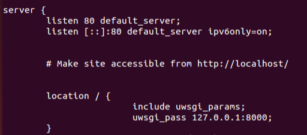
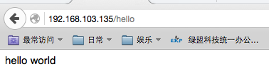

主线流程
本次部署所使用的应用。
服务器：Nginx，uWSGI。
Web框架：Flask
安装步骤：
- apt-get install nginx-full
- pip install uwsgi
- pip install flask
1，修改/etc/nginx/sites-enabled/default 文件

2，编写uwsgi.xml文件
|
|
3，编写app.py
|
|
4，执行命令
uwsgi -x uwsgi.xml -d /tmp/uwsgi.log
/etc/init.d/nginx restart
至此nginx的80端口就会监听到flask应用。
5，流程总结
uwsgi启动目标app，监听app默认输出地端口，同时nginx也监听此端口，并且重定向到80端口，至此，浏览器可以访问80端口查看页面内容。

细节
需要配置